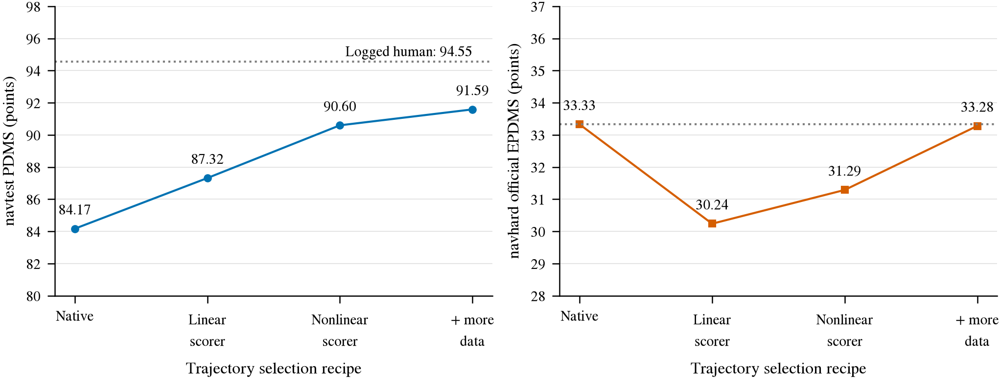
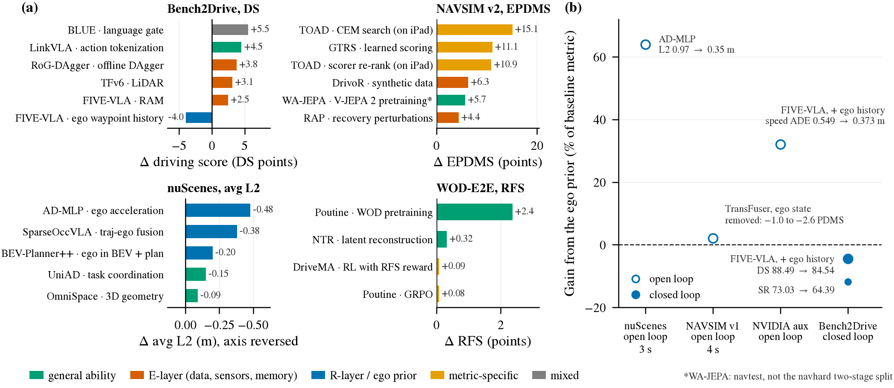
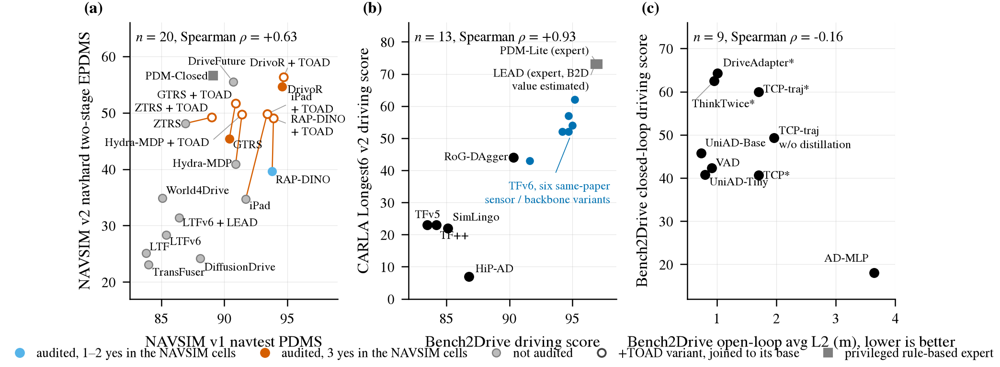
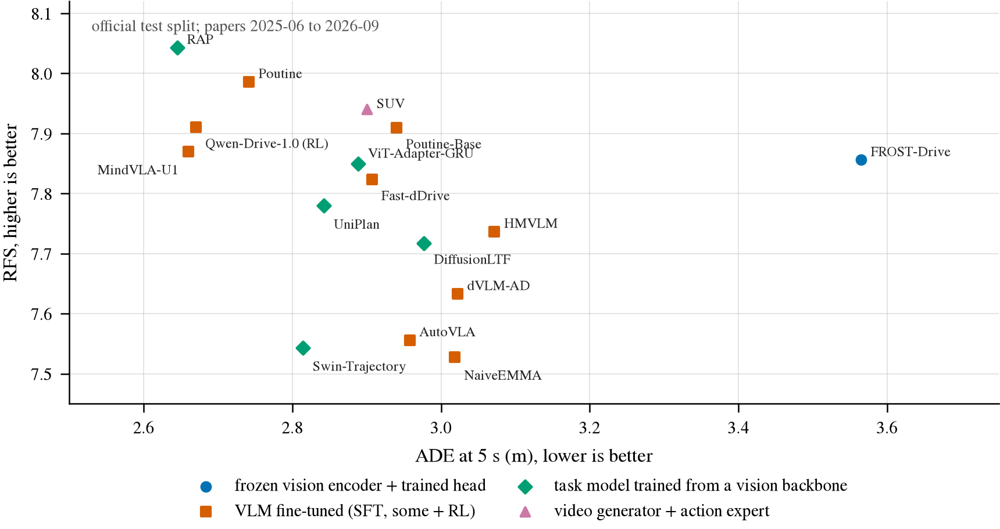

OPENBLAS_CORETYPE=Haswell，重算逐位一致，零历史分数受影响（决策 73）。
spec_plan_smooth 窗口曲率平滑方案与 64 场景闭环验证。自动驾驶端到端决策规划面对四个主要的评测基准，它们在数据源、开闭环机制、评测敏感度与结构性盲区上截然不同。
| 基准 | 评测形态与数据源 | 主指标与核心公式 | 测到常规路径（R 层）什么 | 测到突发反应（E 层）什么 | 结构性盲区与漏洞 |
|---|---|---|---|---|---|
| WOD-E2E | 真实道路开环，8 路相机，1,505 test 帧 | RFS（0–10，截断下限 4.0）+ ADE@5s | 5 s 内与人工 rater 建议几何的一致性、道路拓扑选择 | 意图级：3 s 与 5 s 处是否落在 rater 偏好的信任域内（无物理后果） | 仅考 3 s 与 5 s 两点，中间 18 点不计；两点可匹配不同 rater；无碰撞交互；上传轨迹只打分不验模型真伪 |
| NAVSIM (v1 / v2) | nuPlan 大规模开环（v1 navtest）与 3DGS 合成扰动续开伪闭环（v2 navhard） | v1: PDMS v2: EPDMS（含加权惩罚乘子与续开打分） |
v1: 4 s 沿路行驶、可行驶区（DAC）；v2 增加车道保持（LK）、红灯停（TLC）与偏航/舒适度（DDC/HC/EC） | 弱：仅检查是否撞入回放车辆既定未来；v2 包含扰动后恢复 | v1 逆行不扣分，低速（<0.005 m/s）TTC 免罚；v2 续开场景预生成，不随 agent 动作重仿；顶部全靠 proxy 评分器重排 |
| Bench2Drive (B2D) | CARLA 闭环仿真，220 条短路线（各嵌入 1 个 scenario） | DS = RC × ∏ 违规因子 SR（成功率，通过为 1） |
沿 route 导航行驶、路口转弯、红绿灯识别、起步响应 | 主要：突发障碍（鬼探头、切入、急刹）避碰与违规扣分 | 最低速度项 unused（停着不动不扣分）；无舒适度扣分；前几名总分差在噪声内；依赖手写规则与特定接口 |
| HUGSIM | 3DGS 重建真实场景闭环（KITTI-360 / Waymo / nuScenes），436 场景 | HD-Score = 单帧平均 × min(max RC, 1) | 真实几何道路居中、转弯跟踪、路面可行驶区 | 针对 car 类别的边界框避碰 |
仅对汽车做框检测（行人/骑行者漏检）；失败制动回退可继续计分；EP 权重注释掉不进单帧 |
在基准体系中，若只有 NAVSIM（开环真实外观） 与 Bench2Drive（闭环合成外观） 两列，任何模型在 B2D 上的掉分都会被审稿人解释为「闭环本来就更难」，而无法区分到底是「闭环控制/反应难」还是「合成图像 domain shift 导致表征崩溃」。 HUGSIM 填补了这一空白：它是闭环评测，但画面由 3DGS 光栅化真实街景重建。它彻底将「闭环属性」与「图像仿真鸿沟」解耦。WA-JEPA 在 HUGSIM 上拿到 0.4462 HD，证明真实视频自监督表征能直接零样本迁移至闭环控制。
在同一特征与模型结构下，轨迹回归（Regression）与模式分类（Classification）在两个指标上表现出系统性冲突：
RFS 机制不仅惩罚模型，对真实驾驶轨迹同样苛刻： 在完整验证集（479 个 rater 帧）上，车端实际行驶出来的真实轨迹（logged future）自身也有 9.4% 的概率落在所有人工 rater 信任域之外被惩罚；在车辆自身先验差异最大的第十十分位（s_ego 最高 10% 帧），logged future 的 RFS 仅有 5.92 分，其中 41.7% 被强制截断到底线。 当前学出来的模型在底线截断率上为 23.6%–25.6%，仅略好于零参数匀速直线模型（CV，27.1%）。

CARLA 评测常引用无阻塞 server 天花板（如 1.69 倍实时）或多实例聚合吞吐（如 4 实例测出的 86.5 FPS，决策 16），但这不能作为单实例真实闭环成本外推依据。在真实闭环 tick（单相机 92.4 ms，3 相机 1600×900 达 158 ms）中，128 ms（79%）为阻塞等待相机帧。针对 Python RPC 的微小优化对端到端 Wall-clock 收益几乎为零，真正的加速杠杆在于让 CARLA 直出模型所需分辨率（800×450）以及跳帧 decimate 渲染（决策 17、83）。
通过对 31 个方法（跨 31 篇论文）、1,121 行论文单项消融的系统审计（W1 账本，决策 35），各大榜单的高分成分展现出清晰的规律：

TFv6 论文报告的 95.2 DS 在第三方重测中仅为 89.6（决策 38）。我们对 TFv6 官方冻结 checkpoint 进行了严格配对实验（48 对路線，cluster bootstrap）： 仅改变控制接口，使用 route + target speed 输入驱动控制器比使用模型自身预测的 waypoint 高出整整 14.3 DS [5.1, 25.9]，成功率 SR 提升 29 个百分点。这解释了 TFv6 为何在其自身闭环评测控车中选用 route + target speed 而非 waypoint 通道（决策 31、35）。而 SimLingo 系方法原生即采用 path + speed 解耦接口，B2D 头部方法若存在差距，主要对应测距传感器（TFv6 纯相机 91.6，加装 LiDAR 升至 94.7，+3.1 DS，决策 35）。
在跨 31 篇论文的 1,121 行消融账本中，能够确证属于突发事件反应（E 层）的增益全表仅有 4 条：

| 对比榜单配对 | 全样本相关性 | 排除同族/同论文后 | 机制判读 |
|---|---|---|---|
| Bench2Drive DS ↔ Longest6 DS | n=13, ρ = +0.93 | n=5, ρ = +0.05（TFv6 6 变体内部 ρ = +0.87） | 相关性来自同一代码库内部的 scaling，而非短路线预测长路线。独立方法 B2D 83.5–90.3 对应 Longest6 7–44，HiP-AD 在 B2D 获 86.8 分，Longest6 仅 7 分。 |
| NAVSIM v1 PDMS ↔ v2 EPDMS | n=20, ρ = +0.63 | 顶部 11 个方法：ρ = +0.21（底部 9 个方法：ρ = +0.67） | 全样本相关仅代表代际分层（TransFuser 一代双榜垫底）；v1 榜首 11 个方法聚集在 4.3 分内，v2 离散达 21.6 分，v1 排序对 v2 无预测力。 |
| B2D 开环 L2 ↔ 闭环 DS / SR | n=9, ρ = −0.16 | L2 ↔ SR: −0.05 L2 ↔ Efficiency: −0.69 |
开环 L2 与 Efficiency 同向，均鼓励 continuation（顺延开）；闭环 DS 与 Comfortness 反向（−0.75，惩罚急刹）。开环拟合最好的模型闭环常因不敢动作而垫底。 |
对 8 类榜单 12 张子榜的前 10 名方法归族审计表明：没有一个方法族能够同时在真实数据开环榜（NAVSIM、WOD）与 CARLA 闭环榜（B2D、LB2）上进入前 10。CARLA 闭环榜前 10 被 TransFuser-LEAD 族与 SimLingo 族垄断；真实数据榜被 DrivoR 族与 AFARI（WA-JEPA）族占据；nuScenes 前 10 全为自车先验模型。
「交集主要由训练生态决定、不是能力信号」这一命题状态仍为待定，并已发生就地降级（决策 46）：
| 测试卷 | SparseDriveV2 | ZTRS | 同卷参照 |
|---|---|---|---|
| NAVSIM 复现（官方 devkit） | navtest PDMS 92.22（论文 92.2） | navhard EPDMS 48.15（HF 榜 48.1） | — |
| P5 v1 BA 配对纵向翻转（CARLA） | 5.5% [2.1, 9.6]（null 5.1% → 不可判） | 6.0% [1.9, 11.1]（null 5.1% → 不可判） | TFv6 waypoint 30.4% |
| I3 HUGSIM 车辆配对（真实外观） | 23.6% [18.9, 28.6]（null 4.8% → 有） | 45.5% [40.0, 51.1]（null 5.8% → 有） | openpilot ridge_late 70.0% |
| WOD val RFS 对 CV 的 Δ | −0.68 [−1.05, −0.32] | −0.40 [−0.72, −0.08] | openpilot Cinque +0.90 |
| WOD ADE@5s（s_ego 1–9 档）对 CV 的 Δ | +1.54 m [+1.01, +2.11] | +1.53 m [+1.03, +2.07] | Alpamayo −0.92 m |
| nuScenes L2 均值对 CV 的 Δ | +0.26 m [+0.17, +0.35] | +0.59 m [+0.49, +0.69] | openpilot Cinque +0.25 m |
| 测试卷 | DrivoR | WA-JEPA | 同卷参照 |
|---|---|---|---|
| NAVSIM 复现（各自评测路径原样） | navtest PDMS 93.69（论文 93.7） | navtest EPDMS 91.71（论文 91.7） | — |
| I3 HUGSIM 车辆配对（真实外观） | 33.7% [27.0, 40.7]（null 5.3% → 有） | 66.1% [62.5, 69.7]（null 6.3% → 有，误翻 40%） | openpilot ridge_late 70.0% |
| P5 v1 BA 配对纵向翻转（CARLA，缺后视） | 3.1% [0.6, 6.4]（null 5.7% → 没有） | 13.2% [8.1, 19.2]（null 5.5% → 弱） | TFv6 waypoint 30.4% |
| WOD val RFS 对 CV 的 Δ | −0.63 [−0.99, −0.28] | +0.33 [+0.03, +0.63] | openpilot Cinque +0.90 |
| WOD ADE@5s（s_ego 1–9 档）对 CV 的 Δ | +0.68 m [+0.37, +1.01] | −0.38 m [−0.61, −0.14] | Alpamayo −0.92 m |
| nuScenes L2 均值对 CV 的 Δ | −0.01 m [−0.08, +0.06] | −0.30 m [−0.35, −0.24] | openpilot Cinque +0.25 m |
| 考生（通道） | 合并逐帧翻转 [95% CI] | 行人 | cut-in | 样本外 null false-flip | 对 TFv6 waypoint 同帧差 | 判格（纵向） |
|---|---|---|---|---|---|---|
| BridgeDrive route + target speed（控车通道） | 0.2% [0.0, 0.6] | 0.0% | 0.3% | 4.7% | — | 没有 |
| BridgeDrive waypoint | 27.2% [20.6, 34.6] | 24.1% | 30.1% | 5.1% | −2.7 pp [−10.8, +5.9] | 有 |
| BLUE speed waypoints | 26.5% [17.0, 36.5] | 5.9% | 39.9% | 5.4% | −3.5 pp（行人 −23.7） | 有（cut-in） |
| SimLingo speed waypoints（无 gate 对照） | 34.6% [23.9, 45.6] | 9.1% | 51.1% | 5.8% | +4.7 pp（cut-in +19.3） | 有（cut-in） |
| TFv6 target speed / waypoint（参照） | 0.0% / 30.4% [23.9, 37.0] | 0 / 29.3% | 0 / 32.5% | 4.7% / 5.5% | — | 没有 / 有 |
在 Bench2Drive 209 条有效路线上，同一 checkpoint 的重复评测标准差 SD 达 0.80（BLUE 6 次评测），两次单独评测之差的 95% 置信带达 ±2.3 DS、±5.0 SR。 BLUE 6 次评测总分仅差 0.8，但有 58 / 206 条路线的成败发生翻转（总分稳定靠路线间正负抵消）。 B2D 榜单第 3–7 名（LinkVLA 91.01 到 RoG-DAgger 90.34，第 1 名为 BridgeDrive 96.34、第 2 名为 TFv6 95.28）的总分差距不足 0.7（仅 0.67），完全淹没在训练 run 间约 1.5 DS 的噪声之中。头部方法在 5 个突发 hazard 场景上已近乎饱和（多达 100%），拉开分差的实质是无保护转弯（unprotected turn）与规划避障路线。

WOD-E2E 与 NAVSIM 私有 test 采用离线推理、上传轨迹 pickle/protobuf 机制，服务器只计算几何误差，并不实际重跑模型。 在这种机制下，无法在技术上排除参赛者离线手工标注或使用大语言模型（LLM）前向生成轨迹的可能（按每帧 1 分钟计算，WOD 1,505 帧仅需 25 人时即可全人工绘制）。 对于纯上传榜单，最坚实的信誉防线不是排名，而是开源端到端推理代码、冻结权重与提交包 SHA-256 哈希，实现逐字节可重现（决策 2、文献调研）。
系统审计确认（第 37 条附带发现，非换机引入）：numpy 1.23.4 绑定的 OpenBLAS 在 Intel Sapphire Rapids 架构上会自动选择 Cooperlake 内核，导致矩阵求逆（inv / pinv / SVD）出现严重静默数值错误（pinv 相对真实最小二乘解误差达 3.5），直接使无参数 constant velocity 模型在 NAVSIM 上刷出 64 EPDMS 的虚高分数。
通过对 09-28 之后全部 85 个评测 run 与全部 metric cache 进行全量扫描与逐位比对：
所有评估运行均显式声明并注入了 OPENBLAS_CORETYPE=Haswell 环境变量，缓存参考轨迹最大速度均在正常范围（15–19 m/s），四组代表性配置在全量 12,146 与 5,912 token 上重测结果逐位完全一致。确认没有任何一个已归档 NAVSIM 分数受到该 bug 污染。
experiments/leaderboard_audit/：包含 35 项机制审计矩阵、W1–W5 增益账本、跨榜相关性复算脚本。experiments/top10/：多榜前 10 族定义、环境封装、T1（SparseDriveV2 + ZTRS）、T2（DrivoR + WA-JEPA）、T3（BridgeDrive + BLUE）配对考卷结果。experiments/tfv6_rules/：B2D 公开 209 路线评测噪声与 hazard 拆解（决策 38）；接口配对实验（16 路线 × 3 seeds，48 对）见 experiments/b2d_tfv6/（决策 31）。